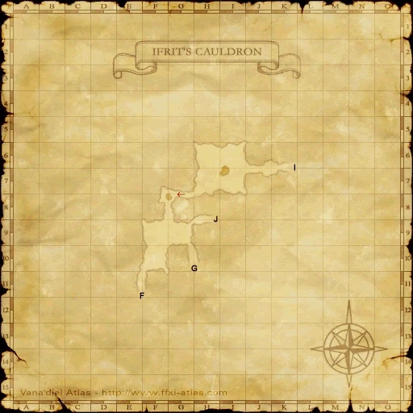

Level 75 reference · Zenith rules
|
Job: Notorious Monster |
|
|
Zone |
Level |
Drops |
Steal |
Spawns |
Notes | ||||||
|
79-80 |
1 |
| |||||||||
|
HP = Detects Low HP; M = Detects Magic; Sc = Follows by Scent; T(S) = True-sight; T(H) = True-hearing JA = Detects job abilities; WS = Detects weaponskills; Z(D) = Asleep in Daytime; Z(N) = Asleep at Nighttime | |||||||||||


Image source
Notes:
- Located in the room at H/I-6/7.
- Non-aggressive nor linking.
- High Resist/Inmmune to Sleep.
- Has potent Auto Regen effect (50 HP/tick?)
- Lottery spawn of the Hurricane Wyverns.
- The Gae Bolg is a 100% drop.
- Uses the attacks:
- Double/Triple Attack: Randomly hit 2-3 time in one swing.
- Dread Shriek: Paralyzes everyone within the AoE.
- Radiant Breath: Silences and Slows (does not overwrite Haste) in a frontal range.
- Dispelling Wind: Removes a buff from everyone within the AoE.
- Killable by 18 level 70+ players.
- Killable by 2-3 skilled players including a ninja and bard or red mage.
Adapted from Eden Wiki: Vouivre · Contributors and history · CC BY-SA 4.0. Revision 1879. Layout, links and optional background text adapted for Zenith.